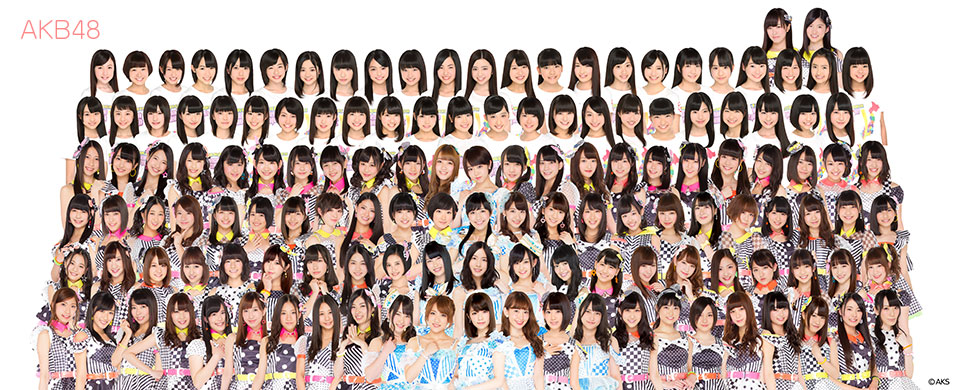

ประวัติ AKB48
AKB48 ก่อตั้งขึ้นในปี 2005 โดยโปรดิวเซอร์ที่ชื่อว่า Yasushi Akimoto หรือชื่อเล่นว่า อากิพี
โดยมีคอนเซ็ปของวงคือ IDOLS YOU CAN MEET หรือ ‘ไอดอลที่คุณเข้าถึงได้’ซึ่งแตกต่างจากไอดอลทั่วไป จะสามารถพบเจอได้แทบทุกวันที่โรงละครของ AKB48 เอง โดยโรงละครนี้จะเรียกว่า เธียร์เตอร์ที่ถูกสร้างมาสำหรับเป็นสถานที่จัดแสดงคอนเสิร์ตของเหล่าไอดอล AKB48 โดยเฉพาะ โดยจะมีการแสดงทุกวัน ผลัดเปลี่ยนกันไประหว่างคนในทีมและสามารถให้วงสามารถออกงานกิจกรรมหลาย ๆ ที่ในเวลาเดียวกันได้

ในการเปิดการแสดงที่ AKB48 เธียร์เตอร์ครั้งแรกนั้น มีคนดูเพียง 7 คนเท่านั้น แต่อากิพีและสาว ๆ ใช้เวลา 7 ปี ในการก้าวสู่
การเปิดแสดงคอนเสิร์ตใหญ่ที่โตเกียวโดม และเป็นการแสดงคอนเสิร์ตถึง 3 คืนติดต่อกัน ซึ่งคอนเสิร์ตนั้นมีชื่อว่า
AKB48 in TOKYO DOME ~1830m no Yume~
โดย 1830m คือระยะทาง 1830 เมตร จาก เธียร์เตอร์ของเหล่า AKB48 ถึงโตเกียวโดม
AKB48 Theater เธียร์เตอร์สำหรับจัดแสดงของสาว ๆ AKB48 โดยเฉพาะ รองรับผู้ชมได้ประมาณ 250 คน ราคาต่อที่นั่ง ในปี 2005 คือ 3000 เยนเท่านั้น (ประมาณ 868 บาท)
|